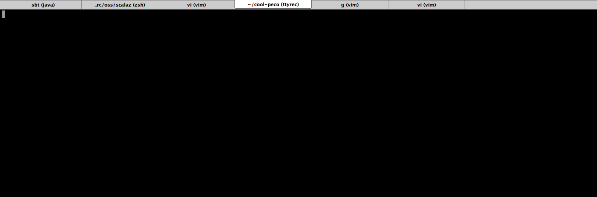
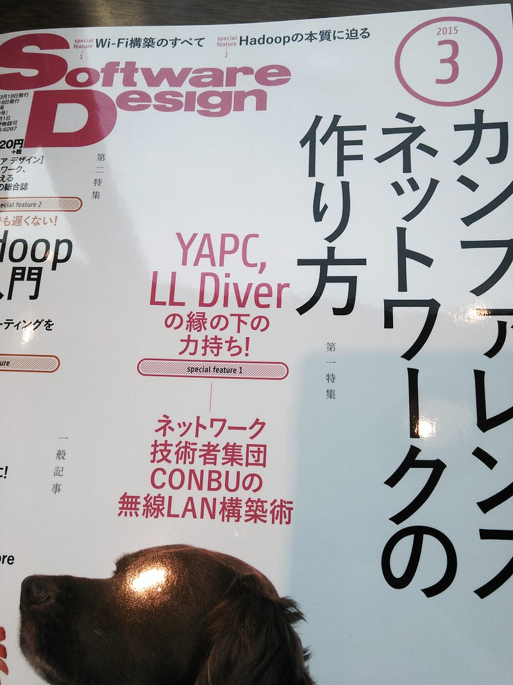

Personal Triumph, And An Organizer’s Triumph
Personal Triumph, And An Organizer’s Triumph
Or, When Your Stuff Goes Out Of Your Hands
Today I’d like to celebrate two relatively minor, but very satisfying triumphs.
Cool Peco
Peco is a command line tool that I started writing last year, after some prodding from fellow hacker mattn (of Go fame, among many others). Peco is a command line tool based on percol, and it basically just takes some input and gives you a selection screen. It’s meant to be used as some sort of filter/pipe in a unixy way.
I had never written that sort of software in my life, but with a lot of help from mattn and syohex, I some how managed to chug on even attracting some users to pick it up. And at the beginning of this year, the peco repository on github got its 2000-th star. That was beyond anything I had ever hoped for for such a simple little tool.
Now, that in itself is a big win, but today I was informed of a new tool based on peco called cool-peco, which is a pun on the name of a Japanese comedic duo (and unless you have really been watching Japanese TV shows in the last 10 yrs there’s no way you would know them).

Just like its cutesy name, it is basically a wrapper tool around peco. It simplifies stuff like choosing hosts to SSH to, changing git branches, etc etc. These utilities existed before in the form of shell scripts, but this cool-peco is the amalgamation of all those to form a new tool based on peco, which is where I feel extremely honored about.
I personally feel that your tool that you released into the wild being called the ancestor or inspiration of another new tool is definitely a major achievement. And today peco achieved that. I’m very satisfied, and gratified.
YAPC On The Cover Of A Magazine
In 2013, I had touched bases with Tajima-san from JANOG. My intention was to ask for some help building YAPC::Asia Tokyo 2013's Wi-Fi network. From our previous experiences we had learned the hard way that simply relying on the Wi-Fi network that the venue provides is a sure way to piss our audience, so we wanted something better.
One way to achieve this was to actually pay a professional network company to build a custom network, but I didn’t want that. That would be strictly business, and builds nothing up for the future. I wanted to leave some sort of legacy for YAPC, or at least the community as a whole.
So I contacted Tajima-san and asked him if he would be able to build the Wi-Fi network for us. The point being that we are not trying to save expenditure here, but rather, we’re trying to 1) Create a new occasion for folks writing apps to mingle with the people building the network, and 2) Create a chance for the network folks to play with some experimental network topology and tools. This way we have cross polination between two related and yet very segregated groups of people, and we also gather more knowledge on how to build modern networks, thus leaving more to the future than if we had simply paid a contractor to do it for us.
After some thought he accepted, and this later became knwon as CONBU (COnference Network Builders).
They have since built networks for other events such as LL Diver, CROSS, and others. Their activities have attracted a lot of attention, and recently they have written a 36 page article on March 2015 issue of Software Design magazine.
The contents of this article are obviously interesting, but personally what really moved me was the cover page:

Today, the name “YAPC” stands out prominently in the cover of a widely circulated tech magazine.
This is, as far as I remember, the first time I didn’t have to push them to put our name on an article in a widely circulated publication. This just made my day. YAPC has come a long way. I’m very very pleased.
So those two were the triumphs that I recently had been blessed with. I’m glad that something I invested a significant amount of time on has grown out of my hands. I’m very proud.